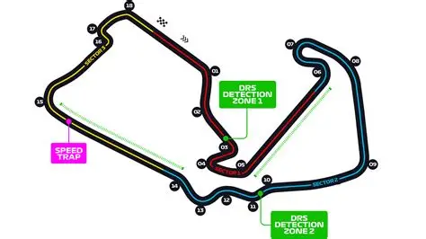

Monaco
Uno de los circuitos mas exigentes del calendario. Calles estrechas y precision absoluta.
Ver Historia

Silverstone
Considerado la cuna de la Formula 1 moderna. Curvas rapidas y alta velocidad promedio.
Ver Historia
Uno de los circuitos mas exigentes del calendario. Calles estrechas y precision absoluta.
Ver HistoriaConsiderado la cuna de la Formula 1 moderna. Curvas rapidas y alta velocidad promedio.
Ver Historia